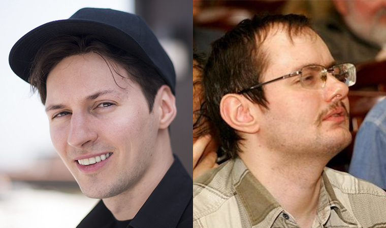

.gif)
В начале 2000-х годов на территории России было несколько социальных сетей, но все они имели ряд недостатков, таких как недостаточно удобный интерфейс и малочисленную аудиторию. В 2006 году на рынок вступила новая социальная сеть - ВКонтакте.
Её создатели - Павел Дуров и его брат Николай - хотели создать нечто новое, что позволит людям не только общаться и находить друзей, но и делиться музыкой, видео, фото и другими интересными контентом. Их идея была весьма успешной, и уже через несколько месяцев после запуска ВКонтакте привлекала миллионы пользователей.
Одной из главных причин успеха ВКонтакте была демократичность платформы: в отличие от других социальных сетей, здесь не было никакой цензуры. Благодаря этому, пользователи могли свободно выражать свои мысли, делиться впечатлениями и откровениями.
Однако, ВКонтакте сталкивалась и с некоторыми проблемами, такими как нарушение авторских прав, нежелательные сообщества и проблемы с конфиденциальностью пользователей. Несмотря на это, ВКонтакте продолжала расти и развиваться, добавляя новые функции и улучшая интерфейс.
Со временем, ВКонтакте стала не только популярной социальной сетью, но и целой экосистемой, включающей магазин приложений, сервисы онлайн-платежей и мессенджер.
Сегодня, ВКонтакте является одной из самых популярных социальных сетей в России и на территории СНГ, обладающей огромным потенциалом и множеством возможностей для общения, развлечения и бизнеса.